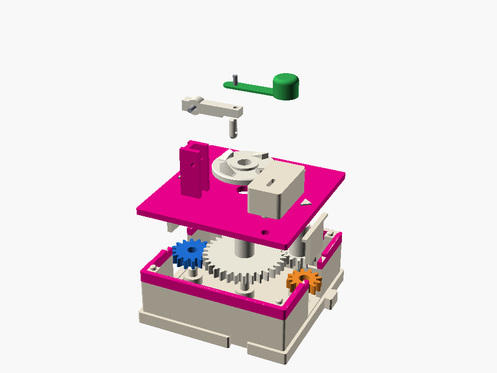
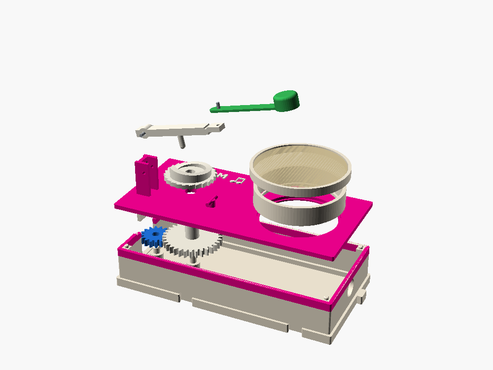
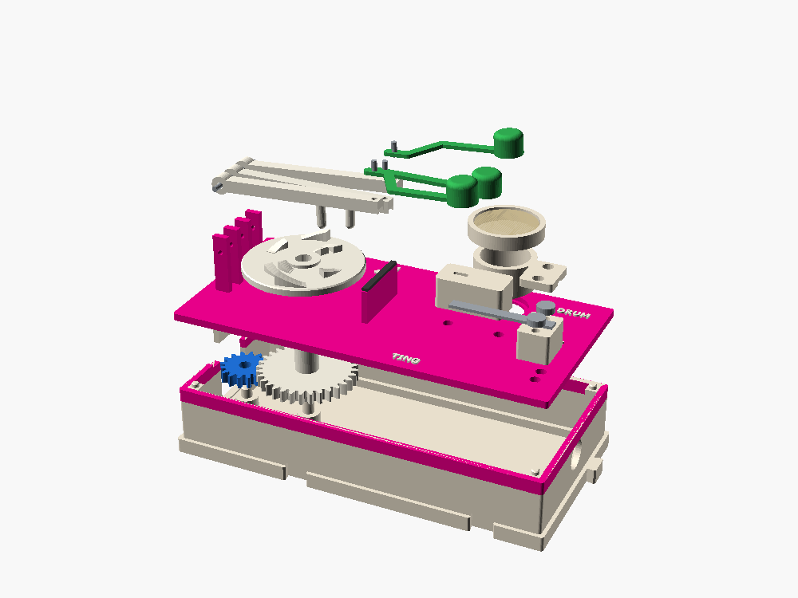

Gear Box Percussion
Three boxes that turn the line into rhythm. Plastic doesn't ring like metal, so they lean on what plastic does well: clacks, toks and thumps. Where a box needs a ringing note, it uses a bought steel tine, the way the motor box buys its N20.
The family
A drummer on a wire. A rhythm wheel lifts a little hammer and drops it: tok, tok, tok, tok.
Frequency and rhythm
Click, click, click… BOOM. A snail cam winds a band for one crank turn, then lets go into a drum.
Energy storage
A programmable drum machine. A swappable disc plays a drum, a tok block and a tine, eight steps a bar.
Programs as data
What actually sounds good
PLA soaks up vibration roughly a hundred times faster than steel. A printed bar goes "tck" and is silent in a few hundredths of a second; a steel tine rings for seconds. So the boxes use plastic for percussion and buy metal for tone.
| Sound source | What you get | |
|---|---|---|
| Reeds snapping off ratchet teeth | Loud and crisp: plastic's best sound | use · BOOM's clicker |
| Hard head on a hollow block with a slit | A good "tok", like a temple block | use · tok voice |
| Packing tape or balloon skin over a hollow box | A real thump. The box itself is the drum's body | use · drums |
| Kalimba tine, clamped and struck | Rings clearly. Slide it in its clamp to tune it | buy · ting voice |
| Hardwood dowel on felt (claves) | A bright "tock" | buy · swap-in |
| Chime tubes, glockenspiel bars, bells | Beautiful, but long: a 50 mm bar is already a high note | later · 2-cell CHIME |
| Bead rattles | Fine shaken, quiet when tapped | later |
| Printed tuned bars or tines | Dull, short, out of tune | only to show why metal rings |
The action every box shares
It is a piano action laid flat on the lid. A lobe on a turning disc lifts the key slowly; at the lobe's cliff the key falls, stops on its rest, and the springy beater carries the head on through a 1 mm gap to strike the voice, then bounces clear so the voice can ring.
Colors follow the system's roles: white parts move force, green is what you watch, gray is bought metal.
BEAT


Wheels from strings: X loud (3.5 mm lobe), x soft (2.2 mm), dot a rest. The red edge is the cliff, where the hammer drops.
Frequency and rhythm: taps a minute = turns a minute × taps per turn.
| Train | W 16 → T 32 → I 12 → E 12, three meshes, ×1 |
| Wheel | on T, ×½ of the port |
| Key | ×2.4 from nub to head |
| Head drop | about 8 mm on an X |
| Tempo | port rpm × ½ × taps per wheel. On the motor box, Xxxx is 90 a minute |
| Cost | 3 through to E |
| Voices | tok block, or a kalimba tine (30.5 mm free, about 790 Hz) |
Because the line passes through, BEATs chain. A TEE into two BEATs with Xxx and Xxxx plays three against four, which meet every twelve taps.
BOOM


Energy goes in over a whole turn and comes out in a few milliseconds: the same energy, hundreds of times the power.
Energy storage: work in slowly, all of it out at once.
| Train | W 16 → C 32, one mesh, ×½ |
| Rhythm | one BOOM per crank turn (two port turns) |
| Spring | one loom band, doubled, over the key and under a lid post |
| Clicker | 24-tooth ratchet rim and a reed printed on the lid: 24 clicks per boom, and it stops the band winding the line backwards |
| Drum | a shell over a 40 mm hole: the whole box is the drum body, with a 10 mm vent |
| Strike | about 20 to 40 mJ, a hundred times a BEAT tap (estimate) |
| Cost | 2, plus the wind-up: plan on 6 |
A QUARTER box in front stretches the build to four crank turns of clicking before each boom.
ROLL


The player piano, the music box and the Jacquard loom share one idea: the machine is fixed and the program is something you swap. ROLL is a disc music box (the Polyphon of the 1880s) with three drums instead of a comb. Print a disc from three strings, or push pegs into the blank disc by hand.
Programs as data: same machine, new disc, new song.
Click a step to cycle rest, soft, loud. The sounds are synthesized stand-ins. 180 steps a minute is what the motor box gives.
| Train | W 16 → D 32, one mesh, ×½; 8 steps a disc turn: one bar per crank turn |
| Keys | three on one filament axle, 7 mm apart; beaters fan out to the voices |
| Skew | the read heads sit at different angles, so each ring's lobes are turned to match. Tape heads need the same fix |
| Voices | drum (tape skin over a 14 mm hole), tok block, kalimba tine (23 mm free, about 1.4 kHz) |
| Pegs | one size per ring; each slot is wider at the cliff end, so a peg only fits the right way round |
| Cost | 2, plus up to three keys at once: plan on 4 |
Playing with the other boxes
A clock. A Geneva step is a quarter port turn, which is exactly one ROLL step. Each crank turn plays one step with a crisp jump, then everything waits.
Steady tempo and half time. The motor never rushes; the HALF box makes the second drummer play half as fast.
Three against four. Two wheels on one line meet every twelve taps: the lowest common multiple, by ear.
A long build. Four crank turns of clicking before each boom.
What to check first
- All three are clean in the fit check in test 0 at several angles, through lobes and drops, and test 7 shows only resting face contacts.
- First prints should prove the let-off (does the head bounce clear of the voice), the loom band's force and the clicker reed, and the pegs' hold in the blank disc.